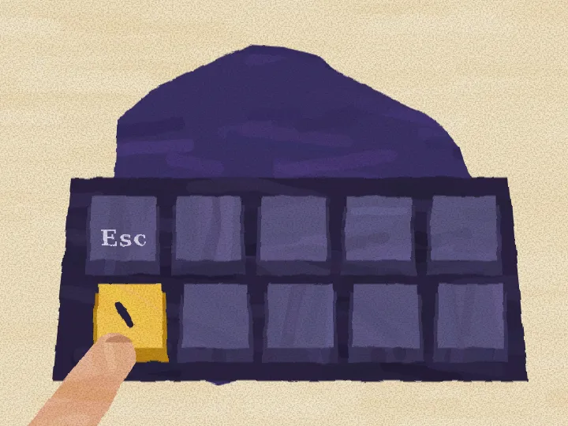
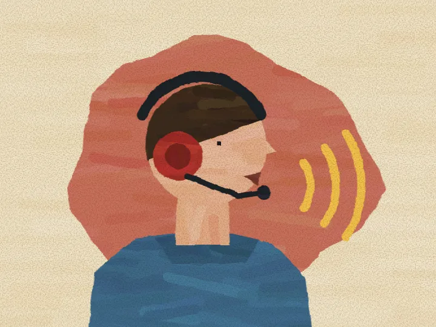
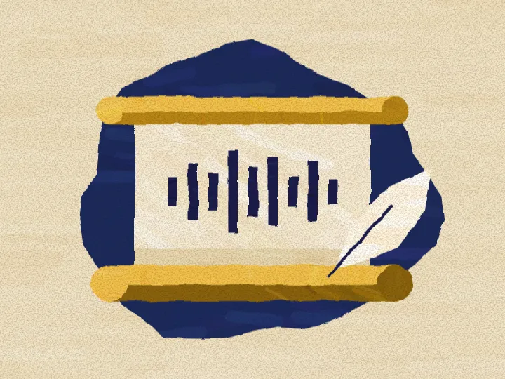

Try it
Go on. Ask it something.
Type it or say it. In the game you just hold a key and talk.
This page knows a handful of answers, and your browser reads them out. In the game, George answers anything in your Civilopedia.
How do I get Great Prophets?
Press Ask to hear it
On your second screen
How it works
Hold a key. Ask out loud.
- 1

Hold the ` key
It is the key under Esc. Hold it down in Civilization VI. You stay in the game.
- 2

Ask your question
Say it the way you would say it to a friend. Then let go of the key.
- 3

George answers
You hear a short answer. The full Civilopedia entries open on your second screen.
- It reads your own game. Your expansions, your DLC and your mods.
- Your voice stays on your PC. It is turned into text there. No audio leaves it.
- Nothing to sign up for. Install it, load a game once, and ask.
Download
One more turn. One more question.
It is 2am. You were going to bed three questions ago.
Download for WindowsFree. For Windows 10 and 11. You need Civilization VI.
Windows may say it protected your PC, because Civ Speak is new. Click More info, then Run anyway. You only do this once.